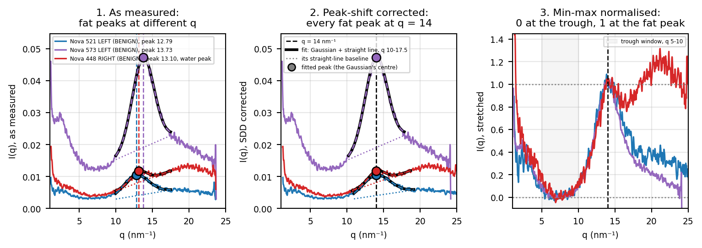

Code
EXAMPLE_PEAKS = (12.8, 13.8) # nm⁻¹: pick the scans whose measured fat peak is nearest these
EXAMPLE_BATCH = "none" # all three from one data batch, so their measured units match
MIN_PROMINENCE = 2.5 # fat peak at least this many times the trough, so the peak is clear
WATER_EXAMPLE = (13.1, 0.8) # a fourth scan with a strong water peak: measured fat peak nearest 13.1, stretched level over q 20-22 at least 0.8
Q_START = 1 # nm⁻¹, where every q axis starts
EXAMPLE_COLOURS = ("tab:blue", "tab:purple", "tab:red")
found = []
for group in ne.stored_scans(ne.STORE_PATH):
if (group.attrs["why"] or int(group.attrs["nova"]) < 250 or group.attrs["label"] not in ne.LABELS
or str(group.attrs["batch"]) != EXAMPLE_BATCH or not group.attrs["peak_value"] >= MIN_PROMINENCE * group.attrs["trough_value"]):
continue
original, adjusted = group["original"], group["adjusted"]
found.append(dict(name=f"Nova {int(group.attrs['nova'])} {group.attrs['side']}", label=group.attrs["label"],
centre=float(original.attrs["params"][1]),
q0=original["q"][()], I0=original["I"][()], q1=adjusted["q"][()], I1=adjusted["I"][()],
peak=ne.peak_value(adjusted.attrs["params"]), peak0=ne.peak_value(original.attrs["params"]),
params0=original.attrs["params"], params1=adjusted.attrs["params"],
window0=tuple(original.attrs["window"]), window1=tuple(adjusted.attrs["window"])))
stretched = ne.normalised_curve(found[-1]["q1"], found[-1]["I1"], found[-1]["peak"], "stretch")
found[-1]["water"] = np.nanmean(stretched[(found[-1]["q1"] >= 20) & (found[-1]["q1"] <= 22)]) if stretched is not None else np.nan
def fitted(q_values, params):
"""The stored fit: a Gaussian plus a straight-line baseline whose level applies at ne.FIT_MIDDLE."""
height, centre, sigma, level, slope = params
return height * np.exp(-(q_values - centre) ** 2 / (2 * sigma ** 2)) + level + slope * (q_values - ne.FIT_MIDDLE)
examples = [min(found, key=lambda s: abs(s["centre"] - target)) for target in EXAMPLE_PEAKS]
examples.append(min((s for s in found if s["water"] >= WATER_EXAMPLE[1]), key=lambda s: abs(s["centre"] - WATER_EXAMPLE[0])))
plt.rcParams["font.size"] = 7 # small text so three panels fit side by side on an A4 page
fig, axes = plt.subplots(1, 3, figsize=(8, 3.4), sharex=True)
for ax in axes:
ax.set_box_aspect(1) # square panels
for s, colour in zip(examples, EXAMPLE_COLOURS):
stretched = ne.normalised_curve(s["q1"], s["I1"], s["peak"], "stretch")
axes[0].plot(s["q0"], s["I0"], color=colour, lw=1.2, label=f"{s['name']} ({s['label']}), peak {s['centre']:.2f}" + (", water peak" if s is examples[-1] else ""))
axes[0].axvline(s["centre"], color=colour, ls="--", lw=1)
for ax, params, window in ((axes[0], s["params0"], s["window0"]), (axes[1], s["params1"], s["window1"])):
x = np.linspace(*window, 300)
ax.plot(x, fitted(x, params), color="black", lw=2.2, zorder=4)
ax.plot(x, fitted(x, params), color=colour, lw=1.2, ls="--", zorder=5)
ax.plot(x, params[3] + params[4] * (x - ne.FIT_MIDDLE), color=colour, lw=1, ls=":", zorder=4) # the baseline
axes[0].plot(s["centre"], s["peak0"], "o", color=colour, ms=7, mec="black", zorder=6)
axes[1].plot(14, s["peak"], "o", color=colour, ms=7, mec="black", zorder=6)
axes[1].plot(s["q1"], s["I1"], color=colour, lw=1.2)
axes[2].plot(s["q1"], stretched, color=colour, lw=1.2)
axes[1].axvline(14, color="black", ls="--", lw=1, label="q = 14 nm⁻¹")
fit_key = [Line2D([], [], color="black", lw=2.2, label="fit: Gaussian + straight line, q 10-17.5"),
Line2D([], [], color="grey", lw=1, ls=":", label="its straight-line baseline"),
Line2D([], [], marker="o", color="grey", mec="black", ls="", label="fitted peak (the Gaussian's centre)")]
axes[2].axvline(14, color="black", ls="--", lw=1)
axes[2].axhline(0, color="grey", ls=":", lw=1)
axes[2].axhline(1, color="grey", ls=":", lw=1)
axes[2].axvspan(*ne.TROUGH_WINDOW, color="grey", alpha=0.08, label=f"trough window, q {ne.TROUGH_WINDOW[0]:g}-{ne.TROUGH_WINDOW[1]:g}")
titles = ("1. As measured:\nfat peaks at different q", "2. Peak-shift corrected:\nevery fat peak at q = 14", "3. Min-max normalised:\n0 at the trough, 1 at the fat peak")
ylabels = ("I(q), as measured", "I(q), SDD corrected", "I(q), stretched")
for ax, title, ylabel in zip(axes, titles, ylabels):
ax.set(title=title, xlabel="q (nm⁻¹)", ylabel=ylabel, xlim=(Q_START, 25))
ax.grid(alpha=0.3)
handles, _ = ax.get_legend_handles_labels()
ax.legend(handles=handles + (fit_key if ax is axes[1] else []), fontsize=4.5, loc="upper left" if ax is not axes[2] else "upper right")
for ax in axes[:2]:
inside = [(s["q0"] if ax is axes[0] else s["q1"]) for s in examples]
values = np.concatenate([(s["I0"] if ax is axes[0] else s["I1"])[(qq >= Q_START) & (qq <= 23)] for s, qq in zip(examples, inside)])
ax.set_ylim(0, np.nanmax(values) * 1.12) # q up to 23, away from the noisy last points
axes[2].set_ylim(-0.1, 1.45)
fig.tight_layout()
plt.show()
plt.rcParams["font.size"] = 10